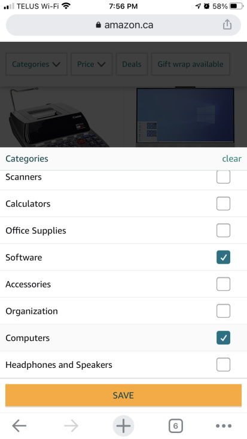

Hick's Law
Amazon Hick's law is a simple way of taking a lot of choices a user has and allowing them filter they want to see. This in turn will help them reach a decision of that they are looking for.
Amazon.com has a lot of products from computer & accessories, personal care products, baby products, etc. With the Hick's Law they allow the user to click on filters to help them narrow down the itmes they are wanting to look at.
Alignment
SoloLearnAlignment is the placement of visual elements. It refers to the lining up of text or graphics on a page. It can make a page easier to read where as a page with poor alignment can make it look cluttered and unfinished.
SoloLearn uses this design principle when they display the different languages that you can learn on their website. It does not matter the size of the screen you are looking at the courses. Everything is in line, easy to read, and appleaing to the eye.
White space
UnityWhite space is also called "negative space" but don't let the word negative throw you off. It is an important element of web design. Without white space, a web site can appear cluttered and very busy. It makes it harder for the user to read and makes it harder for focue on the main message and visuals.
Unity uses this design principle very well. You are able to go through the site and focus on different parts of the site without being overwelmed. They seem to have used this principle through every part of their site.